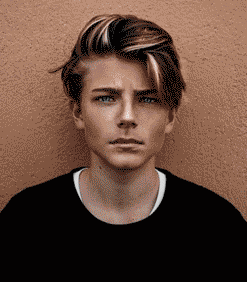

| Email ollie.brenos@gmail.com Online Portfolio www.oliie.brenos.com Education Post Secondary New York Institue of Art and Design-New York,NY,2019-Present Course:personnal Stylist and image consultant Online Course Hiigh school Northern Lights International school — Oslo, Norway, 2008-2010 |
------- |
Phone 989 143 7676 Address 3 Riverview Street Brooklyn,NY 11228 Bio Eye Color Bleu Height :6,2 Haire Color :Brown Weight : 125 lbs Pronouns :they/them |
 |
| Fluent in English and Norwegian | ---------------------- | Excellent time management | --------- | Strong interpersonal skills |
| Conversational in German | ------------------------------ | Physically fi | ---------------------------- | Digital native in Social Media |
| Adaptable and innovative with poses | ----------------- | Team collaboration | -------------------- | Product and brand promotion |
| Freelance Modeling — Various locations in North America, Europe, and Asia |
------------- | 2008-Present | -------------------- | Appeared in over 60 web and magazine advertisements including Teen Vogue, InStyle, and Elle |
| Red Model Management - NYC,New York | ------------- | 2014-2019 | ----------------------- | Represented Calvin Klein in 2014 and Givenchy in 2015 on runway shows during New York Fashion Week |
| Idol Looks Modeling Agency -Oslo, Norway | ----------- | 2007-2012 | ----------------------- | Traveled to Berlin, London, and Los Angeles for over 30 photoshoots, short films, and commercials |